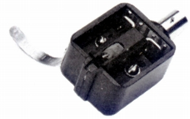

SPU-AE

■価格 27,000円
■発電方式 MC型
■出力電圧 0.05mV（5�p/sec)
■針圧 2〜3g（最適2.5g)
■再生周波数帯域 20-20,000Hz±1dB
■チャンネルセパレーション 25dB/1kHz
■チャンネルバランス 2dB
■コンプライアンス
5×10-6cm/dyne
■負荷抵抗 47kΩ(STA-41使用時）
■直流抵抗 2Ω
■インピーダンス
■針先 0.3×0.7mil
■自重 32g
■交換針 交換不可（本体交換15,500円）
■発売
〜1973年
■販売終了 1990〜92年頃
■備考 価格は1973年頃のもの
1975年頃で33,000円（ユニット交換
17,500円）
1977年頃で38,000円（ユニット交換 20,000円）
1979年頃で43,000円（ユニット交換
23,000円)
ヘッドシェル(Aシェル）付属
シェルなしのものも存在する。
出力電圧は1973年の資料より記載。1979年頃では0.2mVと記載されている
針圧も1979年頃では3〜4.5g 重量は31g
1987年より（ユニット交換 21,000円)に改訂